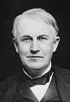
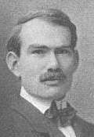
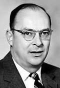
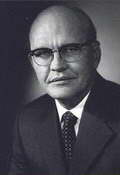

1. Historia de la electrónica analógica
{kind=link}
{kind=link}
{kind=link}
{kind=link}
{kind=link}
{kind=link}
{kind=link}
{kind=link}
En 1883 Thomas Alva Edison observó que al calentar un material metálico se producía una emisión de electrones (efecto termoiónico). Se puede considerar que éste fue el origen de lo que actualmente conocemos como electrónica.
En 1887, Heinrich Hertz observó que al circular una corriente alterna por un conductor, se crean ondas electromagnéticas a su alrededor, las cuales dependen de la corriente que circula. Estas ondas se propagan a la velocidad de la luz (300.000 km/s). Hoy en día utilizamos las ondas electromagnéticas en telecomunicaciones (radio, dispositivos móviles, etc.).
Durante sus investigaciones sobre las ondas electromagnéticas, Hertz también descubre, en 1887, el efecto fotoeléctrico, pero sin conseguir explicarlo.
En 1896, el físico inglés J.J. Thomson descubre el electrón (sí, hasta entonces se había trabajado con la corriente eléctrica, pero no se conocía su composición).
En 1897 Nikola Tesla construyó el primer transmisor de radio (tradicionalmente se ha atribuido este invento a Guillermo Marconi, pero desde 1943 se acepta que el invento es de Tesla).
En 1905, Albert Einstein consigue explicar el efecto fotoeléctrico, por lo cual recibirá el Premio Nobel unos años más tarde (en 1921).
En 1906, Lee De Forest inventa el triodo (o audión, como él lo llamó) un dispositivo que permitía amplificar señales eléctricas. Poco a poco van surgiendo diferentes componentes electrónicos, como el tetrodo (W.H. Schottky, 1919) o el pentodo (G. Holst y B.D. Hubertus, 1926).
En 1920, Albert Hull inventa un primer modelo de magnetrón. En 1937, los hermanos Russell Harrison Varian y Sigurd Fergus Varian inventan el klistrón, y en 1940 los investigadores John Randall y Harry Boot inventan el magnetrón de cavidad resonante, en la universidad de Birminghan (Reino Unido). Ambos elementos son fundamentales en la fabricación del radar (que, a su vez, fue decisivo en la victoria de las potencias aliadas en la Segunda Guerra Mundial). Más adelante, se aplicarían al funcionamiento de los hornos microondas.
En 1938, Alan Herries Wilson sienta las bases teóricas para la fabricación de los elementos semiconductores. Desde este momento y gracias a la constante investigación, los nuevos descubrimientos no han dejado de sorprender a la Humanidad.

Así, por ejemplo, en 1947, un equipo de investigación compuesto por John Bardeen, Walter Brattain y William Shockley inventan el transistor, que supone una gran innovación, ya que sustituye a las válvulas triodo, siendo más pequeño y duradero que éstas.

En 1958, Jack Saint Clair Kilby inventa el chip o circuito integrado, un soporte que contiene varios transistores.
La evolución a partir del chip ha sido espectacular, creciendo éste en capacidad de integración (es decir, de inclusión de componentes dentro de un mismo encapsulado). Ello ha dado lugar a inventos como el microprocesador, realizado por la empresa Intel en 1971 y, con él, dispositivos como los ordenadores, smartphones (2007), tabletas, o tecnologías como la inalámbrica, Internet de las Cosas (IoT), etc.
Todo en una línea de tiempo
Obra publicada con Licencia Creative Commons Reconocimiento No comercial Compartir igual 4.0